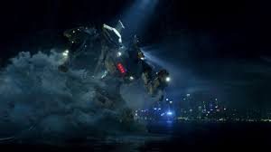
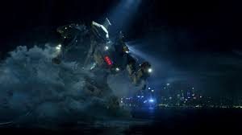

Sobre o Striker
O Striker Eureka é um jaeger Mark-V Australiano, um dos mais icônicos e bem-sucedidos robôs de combate já construídos para enfrentar os Kaijus - criaturas monstruosas que emergem do Oceano Pacífico através de um portal interdimensional.
O Striker Eureka foi lançado em 2 de novembro de 2019 e é o primeiro Jaeger de próxima geração da produção anual do Pan Pacific Defense Corps. Foi construído na base do Shatterdome de Sidney., projetado para ser mais ágil e versátil do que os modelos anteriores, combinando poder de fogo impressionante com mobilidade superior.
Pilotado por Hercules e Chuck Hansen, o Striker Eureka tornou-se lendário após inúmeras vitórias contra os Kaijus, incluindo a batalha final que salvou a humanidade da destruição.
Especificações Técnicas
Modelo
Mark-V
Altura
76 metros
Peso
1.850 toneladas
Armamento Primário
Misseis Peitorais
Armamento Secundário
Espada dupla, Punhos de Aço
Velocidade
10/10
Força
9/10
Resistência
6/10
Galeria
 

História de Combate
O Gipsy Danger entrou em serviço em 2019 e rapidamente estabeleceu-se como um dos Jaegers mais eficientes do Programa Pan-Pacífico de Defesa.
Entre suas vitórias mais notáveis estão:
- Primeiro Combate: Ativado em 2019 na Austrália, foi o único Mark-5 operacional antes do programa ser descontinuado.
- Batalha em Hong Kong (vs. Leatherback & Otachi)
- Destruição do portal interdimensional no Abismo Challenger
Após a vitória decisiva em 2025, o Striker Eureka foi aposentado e tornou-se um símbolo da resistência humana contra as ameaças alienígenas.